электронный
ресурс по учебной дисциплине 1-58 01 01 - "ИНЖЕНЕРНО-ПСИХОЛОГИЧЕСКОЕ ОБЕСПЕЧЕНИЕ ИНФОРМАЦИОННЫХ ТЕХНОЛОГИЙ"
|
||
| Оглавление | Программа | Теория | Практика| Контроль знаний | Об авторах | ||
|
Содержание
LIGA- и SIGА-технологии § 11.1 Особенности и применение LIGA-технологии. § 11.2 Особенности и применение SIGА-технологии. § 11.1 Особенности и применение LIGA-технологии. Физические основы LIGA –технологии. Сущность LIGA-технологии заключается в использовании рентгеновского излучения от синхротрона для получения глубоких (с отвесными стенками) топологических картин в полимерном материале (рентгенорезисте). Излучение синхротрона имеет сверхмалый угол расходимости пучка (0,006 градуса). Фактически формируется пучок параллельных лучей. Источником излучения являются высокоэнергетические электроны (Е>1ГэВ), движущиеся с релятивистскими скоростями. Глубина проникновения излучения достигает единиц миллиметров (это очень высокие глубины!). 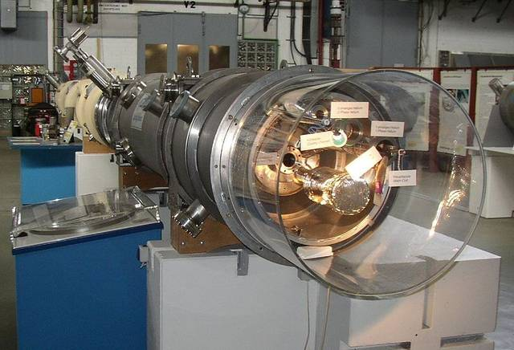 Рисунок 11.1 – Синхротрон За счет высокой локализации излучения в узком телесном угле яркость источников излучения синхротрона в 106 раз больше чем у стандартных источников рентгеновского излучения. Плотность мощности при этом достигает 106 Вт/см2 (очень высокая величина!). Все это определяет высокую эффективность экспонирования в условиях малых интервалах времени. Разработана в Германии. Немецкая аббревиатура означает: литография + гальванопластика + формовка. Применяется глубокая рентгеновская литография. LIGA-технология позволяет формировать структуры в плате с размером порядка миллиметра. При этом появляется возможность формирования микроструктур с вертикальными и горизонтальными размерами, равными 1 и 200-300 в глубину. С помощью LIGA-технологий можно создать объемные микроструктуры представленные на рисунке 11.2. 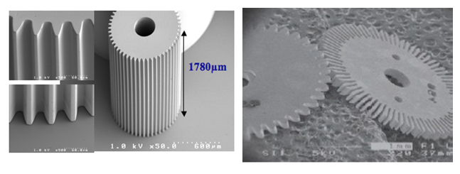 Рисунок 11.2 – Объемные микроструктуры Основные этапы LIGA – технологии. Литография – это теневой перенос изображения с маски (шаблона) на слой рентгенорезиста (ПММА – полиметилметакрилат), в котором излучение вызывает разрушение химических связей вещества. Облученные и необлученные участки рентгенорезиста имеют разную структуру. 1 стадия – это экспонирование (облучение при глубокой рентгеновской литографии) (рис. 11.3) 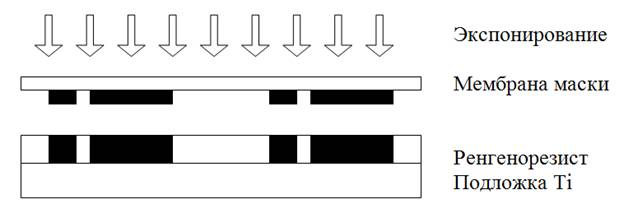 Рисунок 11.3 – Процесс экспонирования 2 стадия – проявление, т.е. удаление засвеченных участков рентгенорезиста (рис. 11.4). 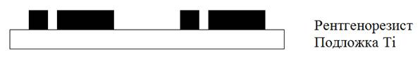Рисунок 11.4 – Процесс проявление 3 стадия – после формирования в рентгенорезисте объемной микроструктуры осуществляется операция электрохимического осаждения металла: например гальванического никеля, кобальта меди или золота, в образовавшейся полости в рентгенорезисте (рис. 11.5) 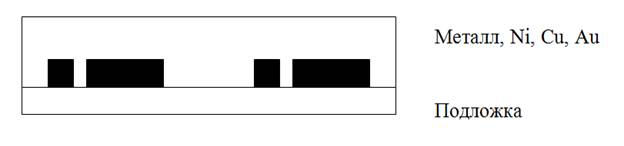 Рисунок 11.5 – Операция электрохимического осаждения металла 4 стадия. Происходит снятие металлической микроформы с подложки и удаление остатков рентгенорезиста с получением объёмной металлической микроформы определенной конфигурации (рис. 11.6). 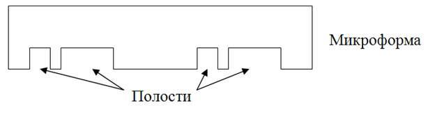 Рисунок 11.6 – Операция снятие металлической микроформы с подложки и удаление остатков рентгенорезиста Два возможных маршрута изготовления микроструктур с применением полученной микроформы представлены на рисунке 11.7. 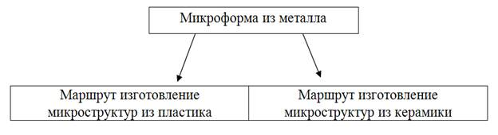 Рисунок 11.7 – Маршруты изготовления микроструктур Изготовление микроструктур из пластика. 1 стадия – формовка. Над металлической матрицей (над микроформой) размещается штампованная плита. Через отверстие в ней вводится пластик – форммасса (рис. 11.8). 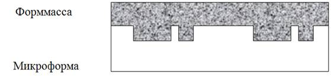 Рисунок 11.8 – Операция формовка 2-ая стадия. Металлический штамп удаляется для дальнейшего использования, для получения других пресс-форм, т.е. происходит отделение металлического штампа от конечного продукта. Конечный продукт – микроструктура из пластика (рис. 11.9). 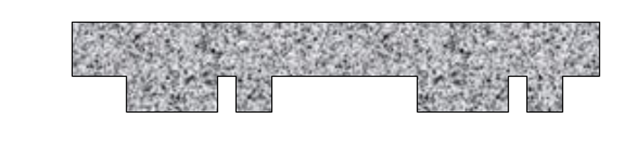 Рисунок 11.9 – Отделенный конечный продукт от металлического штампа Изготовление микроструктур из керамики Рассмотрим стадии изготовления микроструктур из керамики с использованием полученной нами ранее микроформы. 1 стадия – формовка. Над металлической матрицей (микроформой) размещается штамповочная плита и через отверстие над ней вводится сырая керамическая масса (рис. 11.10). 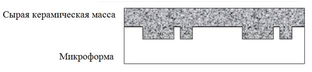 Рисунок 11.10 – Операция формовка 2 стадия – обжиг керамики (рис. 11.11). 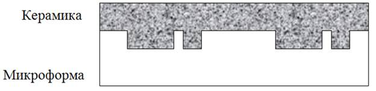 Рисунок 11.11 – Операция обжиг керамики 3 стадия – отделение конечного продукта (рис. 11.12). 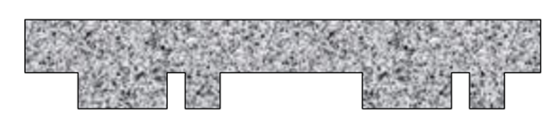 Рисунок 11.12 – Отделенный конечный продукт Специфика LIGA-технологии заключается в следующем: 1) Применение микроформ, с помощью которых микрорельеф последовательно повторяется в разных мате-риалах 2) Первая микроформа образуется областями рентенорезиста ПММА 3) Гальваническое наращивание никеля меди или золота до толщины, большей чем высота микрорельефа, образует прочную металлическую форму. С помощью этой металлической формы микроконфигурация затем многократно воспроизводиться литьем, или штамповкой, или формовкой сырой керамической массы с последующим обжигом. 4) Технология позволяет изготавливать объемные структуры высотой до 1 мм в количестве да 1000 штук на одной подложке за счет интегральных принципов обработки. 5) Относительно низкая стоимость изготовления микроструктур. 6) Основные ограничения технологии обусловлены необходимостью использования уникальных источников излучения от синхротрона. А также сложности гальвано-пластики на микроуровне. § 11.2 Особенности и применение SIGА-технологии. Аббревиатура от слов Silicon + гальваника + формовка. SIGA технология совместима с кремниевой технологией тонких пленок. Этапы SIGA-технологии представлены на рис. 5.1.1. – 5.1.12. В технологии используется УФ-литография. Вместо металла на операциях 9 – 12 можно использовать пластмассу. 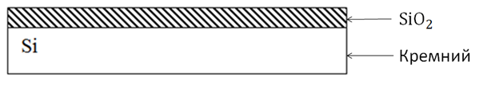 Рисунок 11.13 – Окисление кремния
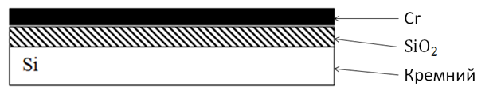 Рисунок 11.14 – Напыление хрома 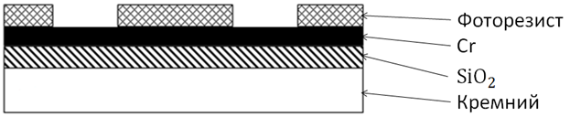 Рисунок 11.15 – Нанесение фоторезиста и фотолитография 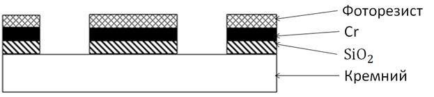 Рисунок 11.16 – Фотолитография по Cr (травление Cr), травление SiO2 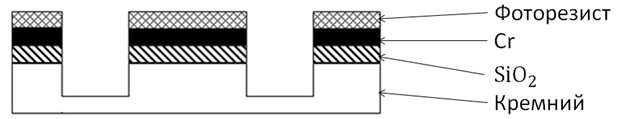 Рисунок 11.17 – Плазменное травление кремния 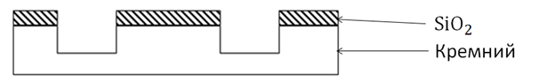 Рисунок 11.18 – Удаление фоторезиста и хрома 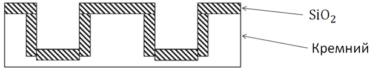 Рисунок 11.19 – Термическое окисление кремния 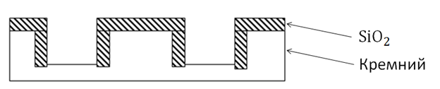 Рисунок 11.20 – Анизатропное травление SiO2 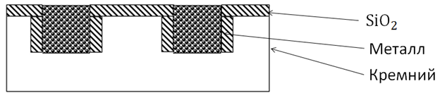 Рисунок 11.21 – Галванизация 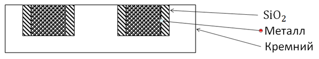 Рисунок 11.22 – Травление SiO2 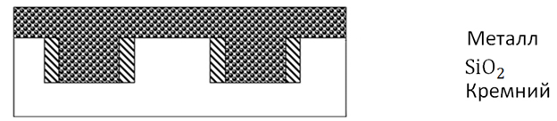 Рисунок 11.23 – Галванизация 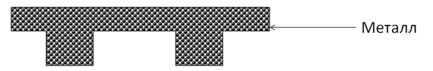 Рисунок 11.24 – Трехмерная деталь из металла
|
| (С) БГУИР |